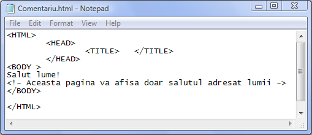

BLOCURI DE COMENTARII
Blocurile de comentarii sunt blocuri de explicatii care pot fi plasate in orice sectiune a
paginii web. Ele sunt necesare pentru oferirea de explicatii referitoare la diferitele aspecte din
pagina web. Blocurile de explicatii vor fi cuprinse intre etichetele de inceput <!-si
respectiv de sfarsit de comentariu ->
Intre caracterele care compun cele doua etichete nu se lasa spatii!!!
Nimic din ceea ce este cuprins intre cele doua etichete nu va fi afisat in pagina web!
Iata un exemplu de comentariu in pagina web:

Inapoi la Blocuri de text